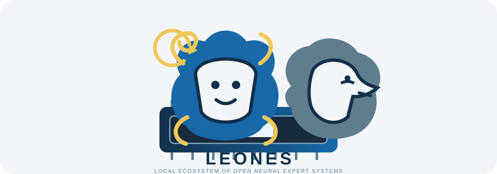

OBSERVAR
Detectar CPU, memoria, aceleradores, sistema y capacidades realmente disponibles.

Ecosistema de IA local · 2026Local Ecosystem of Open Neural Expert Systems
De una necesidad concreta a una recomendación reproducible: hardware observado, modelo elegido, stack de ejecución, runtime compatible, medición y evidencia.
LEONES no empieza suponiendo qué puede hacer una máquina. Empieza observando el hardware real y termina, cuando se autoriza, con una ejecución medible y evidencia reproducible.
Detectar CPU, memoria, aceleradores, sistema y capacidades realmente disponibles.
Usar inteligencia especializada como LLMFit para acotar qué modelos tienen sentido.
Construir candidatos y dejar que la persona elija el modelo y el stack.
Separar consentimiento para instalar de autorización para ejecutar un benchmark.
Determinar qué runtime puede ejecutar realmente el formato del modelo seleccionado.
Comprobar físicamente runtime, stack y modelo antes de medir.
Entregar la ejecución autorizada al runner canónico y medir sobre el equipo real.
Conservar runtime, modelo, cuantización, hardware, protocolo, ejecución y resultados.
Descubre modelos, runtimes, técnicas, hardware y cambios relevantes.
Explorar →Conocimiento estructurado sobre modelos, capacidades y ecosistema.
Entrar →Transforma necesidad, hardware y evidencia en una ruta razonada.
Ver →La ejecución depende de memoria, backend, contexto, cuantización y runtime compatible.
Ver la pila → · Runtimes → · Cuadros maestros →Evalúa si un sistema completa tareas reales, no solo si genera muchos tokens.
Ver → · Diagramas →Resultados voluntarios que amplían la evidencia sobre hardware real.
Entrar →LEONES separa qué stack se quiere ejecutar, qué runtime existe en el host, qué modelo es ejecutable y qué instalación está realmente verificada.
ODS se integra como opción de stack. LEONES usa su instalador e interfaces canónicas y verifica físicamente el resultado.
Magnitude se integra como opción orientada a trabajo agentivo. Recomendación, preparación, ejecución y medición permanecen separadas.
Un candidato GGUF no se convierte en un nombre Ollama por inferencia. LEONES resuelve el modelo a un runtime compatible antes de abrir A01.
ESTIMATED ≠ MEASURED. Una estimación de LLMFit nunca es evidencia física.
install.sh ejecutable; instalación mínima sin descargar stacks ni modelos automáticamente.
Eco del terminal restaurado durante el wizard interactivo.
Detección de Docker directo, sudo, rootless y Podman sin asumir equivalencias.
Verificación física observó ODS CLI e imagen Docker en la máquina beta.
Cuando el modelo seleccionado no está disponible en Ollama, A01 queda bloqueado: no se inventa MEASURED.
La desinstalación conserva las evidencias históricas de artifacts/runtime-executions/.
Necesidad → Hardware observado → LLMFit → candidatos → elección humana → ODS / Magnitude → runtime compatible → instalación → verificación → medición → evidencia.
La documentación, la prospección y la aplicación forman un ciclo continuo: observar, estructurar, decidir, autorizar, resolver, ejecutar, medir y aprender.
Ruta de ejecución real validada y reutilizable.
Hardware → perfilado → candidatos → elección → stack → consentimiento.
Instalación, cancelación, verificación y bloqueo honesto de A01 comprobados.
Resolver artefacto y runtime ejecutable sin instalaciones silenciosas.
Conectar el runtime resuelto al adaptador ejecutable y producir evidencia nueva.